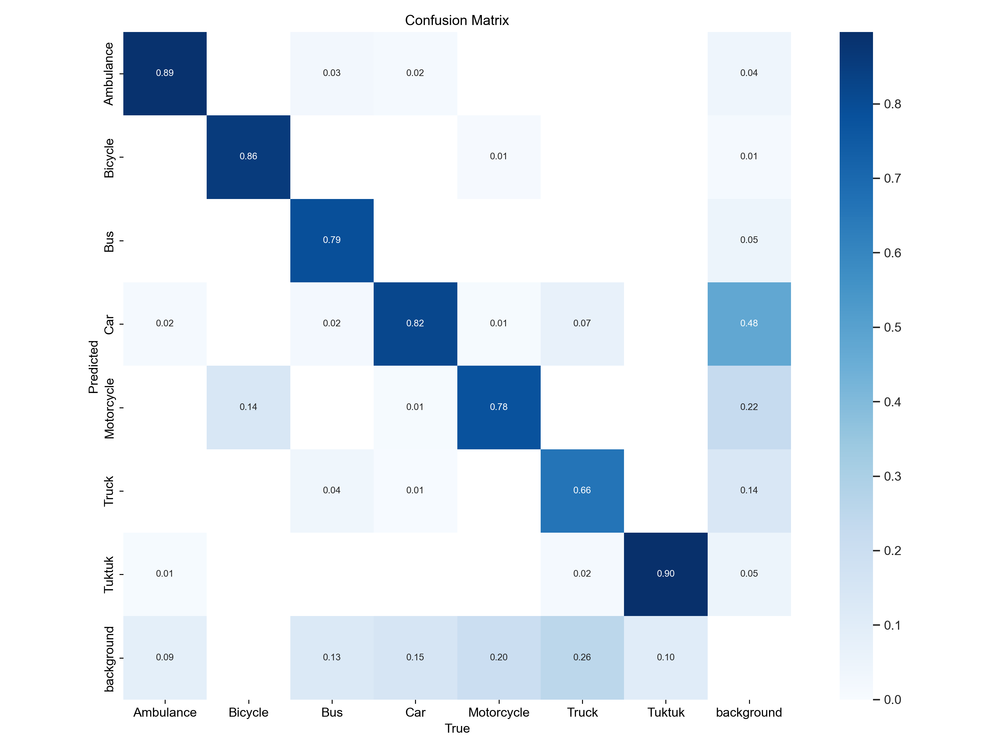
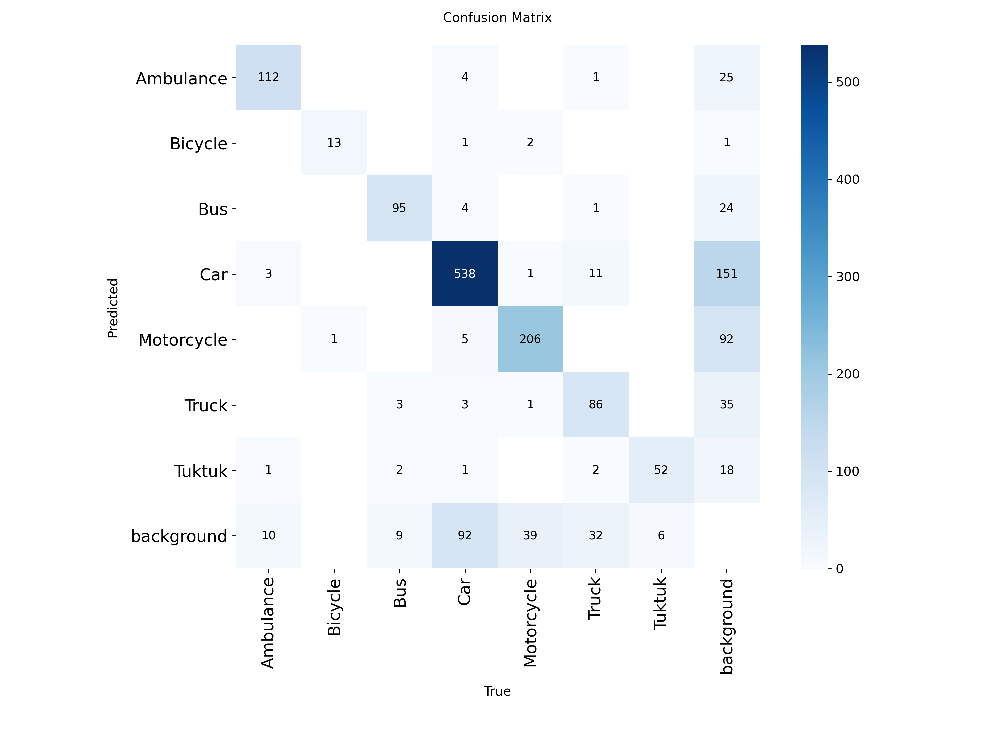
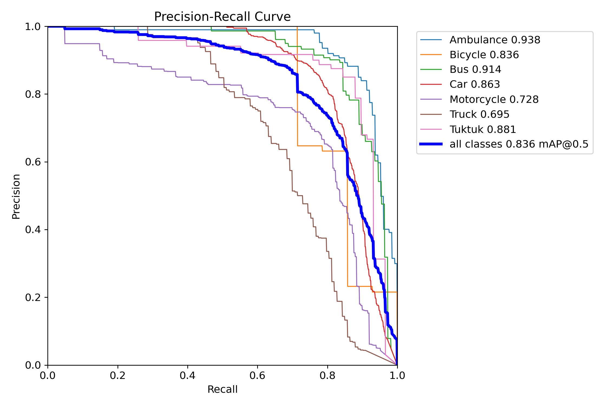
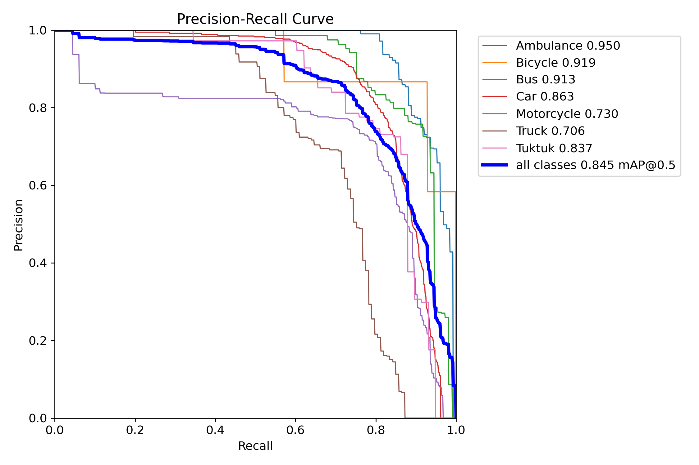
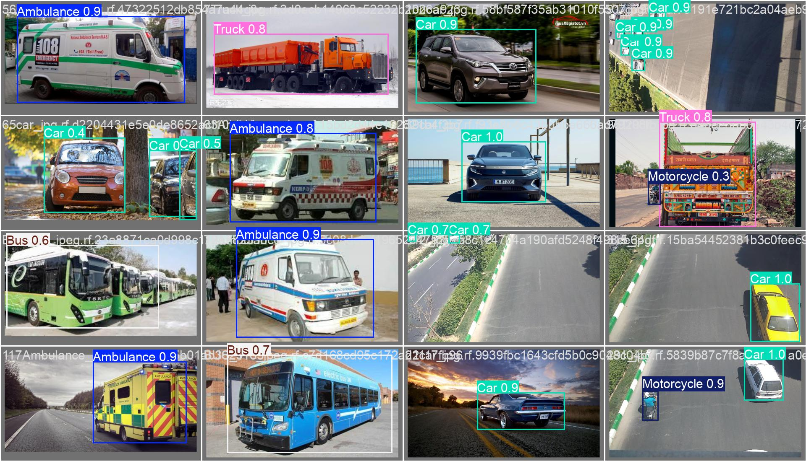
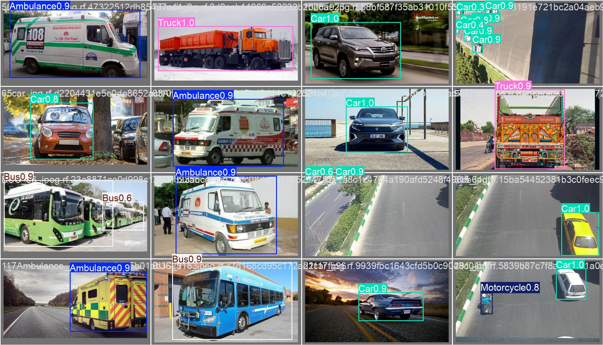

YOLOv5 vs YOLOv8 Model Comparison — TrafficEye
Baseline comparison evidence for model selection in the TrafficEye pipeline.
Metrics Table
| Model | Precision | Recall | mAP50 | mAP50-95 |
|---|---|---|---|---|
| YOLOv5n baseline | 0.769 | 0.796 | 0.836 | 0.537 |
| YOLOv8n selected | 0.802 | 0.794 | 0.845 | 0.594 |
Metric Winners
Final Decision
Why YOLOv8 Was Selected
After fair retraining using the same dataset and training settings, YOLOv8n performed better in Precision, mAP50, and mAP50-95. YOLOv5n had only a very small Recall advantage of 0.002. Therefore, YOLOv8n was selected as the final model for TrafficEye.
Video Inference Comparison
Upload one traffic video. The exact same source frames are run through the real trained YOLOv5n baseline and the real trained YOLOv8n model — same confidence threshold (0.4), same input frame — so the two panels below are a fair, synchronised, side-by-side view of what each model actually detects. This is the visual demonstration of why the two models were compared.
Visual Evidence
Confusion Matrix


Precision-Recall Curve


Validation Batch 0 Predictions

